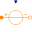
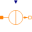

SourcesSources of different complexity of magnetomotive force and magnetic flux |
|
Package Contents
|
ConstantMagneticPotentialDifference Constant magnetomotive force |
|
|  |
SignalMagneticPotentialDifference Signal-controlled magnetomotive force |
|
Source of constant magnetic flux |
|
|  |
Signal-controlled magnetic flux source |
Information
This information is part of the Modelica Standard Library maintained by the Modelica Association.
This package contains sources of a magnetic potential difference or a magnetic flux: